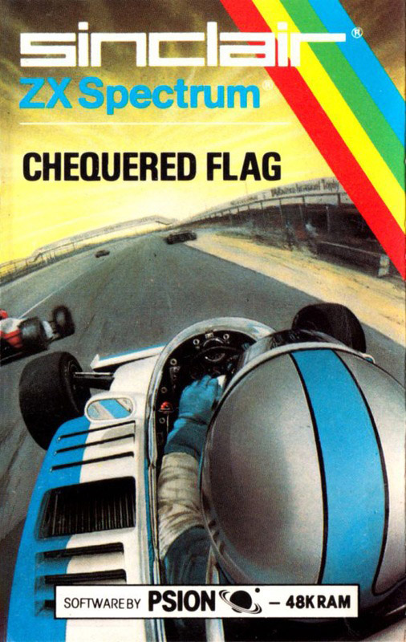
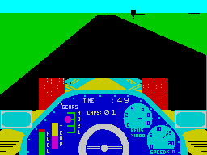

Chequered Flag


{kind=link}

| Publisher: | Psion Sinclair |
| Price: | £6.95 |
| Year: | 1983 |
| Source: | CRASH, Issue 3 |
We are still left waiting for the definitive Spectrum version of the 'Pole Position* type game. Chequered Flag isn't it — what it is, however, is the most sophisticated program for the Spectrum with motor racing as its theme.

You are offered options to race on ten different race tracks, based on real international courses like Monaco (no buildings though), Brands Hatch and Silverstone, and with three different types of car; the nice easy automatic McFaster Special, the more difficult Psion Pegasus, or the very powerful, four gear Feretti Turbo. These choices are nicely presented with a lit window around the graphic devices which can be selected by using SPACE and ENTER.
The instrument display features speedo, rev counter, fuel and temperature gauges, gear selection Indicator, timer and lap counter. You may select to race from one lap upwards. The tracks have hazards like oil and water on the road which will upset the cars performance and may even cause you to crash. Putting a wheel off the road does not cause an instant accident, but will if you persist There may also be glass on the road, which can cause tyres to burst with dramatic con sequences. The road ahead is seen in full perspective, although the horizon is flat, and includes bends and hills.
CRITICISM
'All the graphics work very well in this game — actually it's more like a simulation than an exciting game. You can see the nose of your car with the wheels turning, and the steering wheel, which revolves correctly, and then the road ahead. I was a bit worried that there were no hands on the steering wheel! But the great drawback to ultimate fun is the lack of any other cars on the circuit with you.'
'I get the feeling that Psion see themselves in a rather serious light — which isn't to say that Chequered Flag isn't fun to play, but its appeal palls when you get the hang of guiding the various cars and begin to realise that there's no real competition spirit in it. Other cars would have been a help of course. Still, the graphics are quite impressive. Pity there are so many keys to handle, although they are quite sensibly laid out.'
'Chequered Flag looks wonderful enough and plays very well — It's what I would call a 'kind' program because it allows you to edge off the road without killing you off But because you are definitely in the car and not outside looking down on It, it creates a simulation rather than game feeling which left me thinking, yes very good, but a bit cold.'
COMMENTS
| Control keys: | Accelerate 0, brake 1, fast/slow left A/S, slow/fast right D/F, change up M, change down N |
| Joystick: | None |
| Keyboard play: | Responsive |
| Use of colour: | Good |
| Graphics: | Very good 3D effect, detailed |
| Sound: | Average, continuous |
| Skill levels: | 3 cars |
| Lives: | 1 |
| Screens: | 10 circuits |
| General rating: | A good simulation, not a very addictive game. |
| Use of computer: | 58% |
| Graphics: | 89% |
| Playability: | 68% |
| Getting started: | 85% |
| Addictive qualities: | 52% |
| Value for money: | 75% |
| Overall: | 71% |